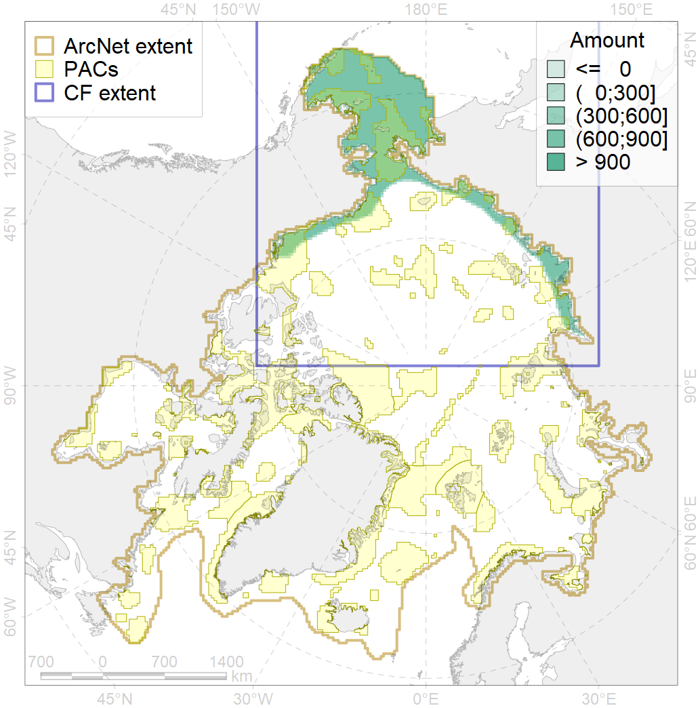
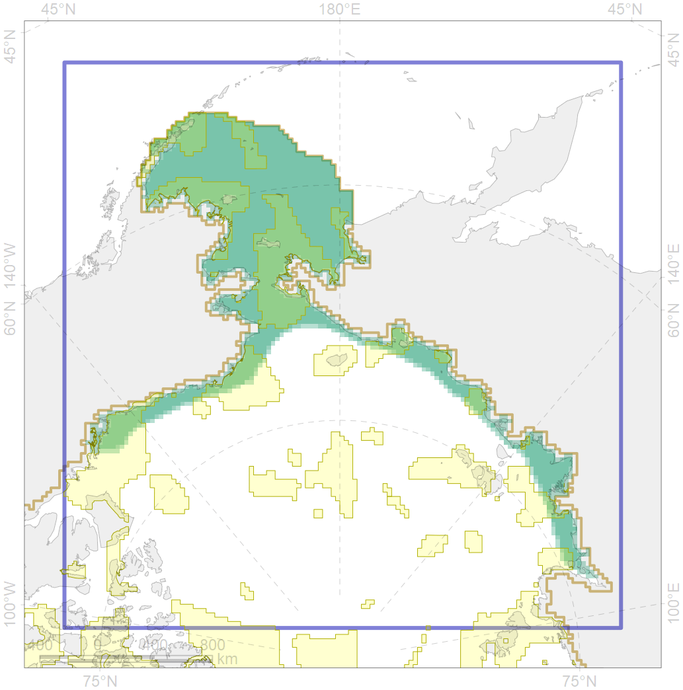

4023

| CF code | 4023 |
| CF name | Feeding/migration area of the Pink Salmon (Oncorhynchus gorbuscha), native distribution |
| Time Period | 1940s-2010s |
| Source(s) | Chernova, 2011; Coad Reist, 2018; Mecklenburg et al., 2018 |
| Seasonality | Jan-Dec |
| Depth Horizon | 0-700 m |
| Methodology | Compiled from literature sources based on field observations |
| Use Restrictions | Open sources |
| Author Name | N. Chernova |
| Notes | Chernova (2011) compiled the data of: Svetovidov, 1948; Svetovidov, 1986; Cohen et al. 1990; Hardie, 2003; Pethon, 2005; Evseenko et al., 2006; Byrkjedal, Hшines, 2007; Stiansen, Filin, 2008; Hardie et al., 2008 |
| Scenario’s Target | 0.06 |
| Target Achievement | 0.398 (Scenario: 663.3%) |
| PAC | Share of the Total Amount within the PAC | Share of the Target Achievement for the ArcNet | PAC’s Contribution to the Target Achievement |
|---|---|---|---|
| 1 | 3.5% | 55.9% | 8.4% |
| 2 | 2.8%3.4% | 38.6%40.7% | 5.8%6.1% |
| 3 | 6.5%7.1% | 100.8%108.5% | 15.2%16.4% |
| 4 | 1.3%1.5% | 17.2%20.2% | 2.6%3.0% |
| 5 | 14.4%14.8% | 220.1%225.7% | 33.2%34.0% |
| 6 | 0.0%0.1% | 0.5%1.5% | 0.1%0.2% |
| 8 | 1.1%1.1% | 16.4%16.4% | 2.5%2.5% |
| 9 | 0.4%0.4% | 4.3%4.4% | 0.6%0.7% |
| 10 | 0.9%1.0% | 12.6%12.7% | 1.9%1.9% |
| 12 | 0.6%0.7% | 9.4%9.8% | 1.4%1.5% |
| 13 | 0.3%0.3% | 4.9%4.9% | 0.7%0.7% |
| 60 | 2.8%3.1% | 39.9%41.7% | 6.0%6.3% |
| 61 | 0.1% | 0.9% | 0.1% |
| 62 | 3.3%3.5% | 51.9%52.5% | 7.8%7.9% |
| inner | 38.2%40.6% | 573.4%595.8% | 86.4%89.8% |
| outer | 61.8%69.2% | 90.0%187.9% | 13.6%28.3% |
| † supplement values are for area consistence whereas principal values are for Accenter compatible gridded stats |